أسئلة امتحانات الثانوية العامة (الفرع العلمي) من 2017 إلى 2025 مصنفة على هذا الفصل: 29 سؤال اختيار من متعدد و32 سؤال مقالي ومسألة. اضغط على خيار لترى إن كان صحيحاً مع الشرح، وحاول حل المسائل قبل ما تفتح الإجابة.
الشكل المجاور يمثل العلاقة بين شدة التيار الكهربائي والزمن في ملف حلزوني إذا علمت أن معامل الحث الذاتي له $\mathrm{(80\,mH)}$ فما مقدار القوة الدافعة المتولدة في الفترة الزمنية $(c-d)$ بوحدة الفولت؟
في الشكل المجاور، حلقة فلزية مستطيلة الشكل وضعت بالقرب من سلك مستقيم طويل يحمل تياراً كهربائياً $(I)$، وبشكل موازٍ له، في أي اتجاه يتم تحريك السلك حتى يتولد تيار حثي في الحلقة باتجاه دوران عقارب الساعة؟
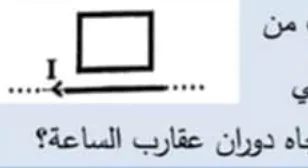
مجال السلك عند الحلقة داخل الصفحة، والتيار الحثي مع عقارب الساعة يولد مجالاً داخل الصفحة ⇐ يقاوم نقصان التدفق ⇐ يجب إبعاد السلك عن الحلقة $(-y)$.
32022 د1 علمي
عند زيادة معامل الحث الذاتي في دارة محث ومقاومة على التوالي، فأي الآتية صحيحة؟
القيمة النهائية $\dfrac{\varepsilon}{R}$ لا تعتمد على $L$، لكن الثابت الزمني $\tau=\dfrac LR$ يزداد فيبطؤ نمو التيار.
42021 د2 علمي
الشكل المجاور يمثل العلاقة بين شدة التيار الكهربائي والزمن في ملف حلزوني، إذا علمت أن معامل الحث الذاتي له $\mathrm{(100\,mH)}$ فما مقدار القوة الدافعة المتولدة بوحدة الفولت في الفترة الزمنية $(b-c)$؟
ملفان حلزونيان $(a,b)$ متماثلان في الطول ومساحة المقطع. إذا كان $(N_a=3N_b)$ فما قيمة $\left(\frac{L_a}{L_b}\right)$؟
$L=\dfrac{\mu_0N^2A}{\ell}$ ⇐ $L\propto N^2$
62021 د2 صناعي
أي الآتية ينشأ عنه تيار حثي في الحلقة المبينة باتجاه دوران عقارب الساعة؟
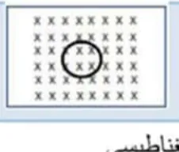
المجال داخل الصفحة، والتيار مع عقارب الساعة يولد مجالاً داخل الصفحة ⇐ يقاوم نقصان التدفق ⇐ نقصان المساحة.
72021 د1 صناعي
ما وحدة قياس التدفق المغناطيسي؟
$\Phi=BA$ ⇐ $T\cdot m^2=Wb$
82017 د1
يتولد تيار حثي اتجاهه مع عقارب الساعة في الحلقة المبينة في الشكل التي ينطبق مستواها على مستوى الصفحة إذا:
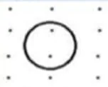
المجال خارج من الصفحة، والتيار الحثي مع عقارب الساعة يولد مجالاً داخل الصفحة ⇐ يقاوم زيادة التدفق ⇐ زادت المساحة.
92018 د1
في الشكل المقابل عند تقريب المغناطيس من الدارة يكون اتجاه التيار المار عبر المقاومة $(R)$:
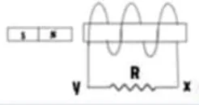
حسب قانون لنز يتكون في طرف الملف المقابل للمغناطيس قطب مماثل لقطبه ليقاوم الاقتراب، ومنه يتحدد اتجاه التيار في المقاومة.
102018 د2
في الدارة المقابلة عند فتح المفتاح $(ح)$ فإن القوة التي تنشأ بين المغناطيس والدارة مع بقاء المغناطيس ثابتاً هي:
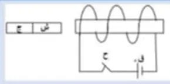
عند فتح المفتاح يتناقص تيار الملف فيتغير التدفق؛ وحسب قانون لنز تنشأ قوة تقاوم هذا التغير. (الإجابة حسب مفتاح الامتحان.)
112019 د1
في الشكل المجاور، حلقة فلزية مستطيلة الشكل وضعت بالقرب من سلك مستقيم طويل يحمل تياراً كهربائياً $(I)$، وبشكل موازٍ له، متى يتولد تيار حثي في الحلقة باتجاه دوران عقارب الساعة؟
التيار الحثي مع عقارب الساعة يقاوم نقصان التدفق (داخل الصفحة) ⇐ تبتعد الحلقة عن السلك.
122019 د2
في الشكل المجاور، في أي حالة من الآتية لا يتولد تيار حثي في الحلقة؟
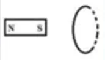
لا توجد حركة نسبية فلا يتغير التدفق.
132019 د2
أي من الآتية تعد وحدة قياس القوة الدافعة الكهربائية الحثية؟
سلك موضوع في مجال مغناطيسي منتظم حيث طوله عمودي على المجال، كي يتولد قوة دافعة حثية في السلك يجب تحريكه في اتجاه:
$\varepsilon=BLv$ عندما تكون $v$ عمودية على $L$ وعلى $B$ (يقطع خطوط المجال).
162020 د1
ما المبدأ الفيزيائي الذي استخدمه لنز للتوصل إلى قاعدة تحديد قطبية القوة الدافعة الكهربائية الحثية المتولدة في ملف أو سلك؟
لو ساعد التيار الحثي التغير لحصلنا على طاقة من لا شيء.
172020 د1
أي الآتية لا تعد وحدة قياس التدفق المغناطيسي؟
وحدة التدفق $Wb=V\cdot s$ وليس $\mathrm{V/s}$.
182020 د1
يتغير التدفق المغناطيسي خلال ملف مكون من $(N)$ لفة حسب المنحنى في الشكل المجاور، في أي فترة يكون المجال المغناطيسي الحثي المتولد في الملف بنفس اتجاه المجال المغناطيسي الأصلي؟
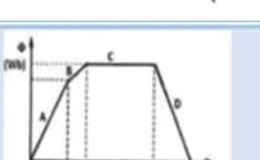
يكون المجال الحثي بنفس اتجاه الأصلي عندما يتناقص التدفق (ليعوض النقص)، وهذا في الفترة D.
192020 د1
ملف حلزوني طوله $(L)$ ومساحة مقطعه $(A)$ وعدد لفاته $(N)$ ومحاثته $(L_{in})$، إذا تم مضاعفة شدة التيار المار فيه، فكم يصبح مقدار معامل الحث الذاتي $(L_{in})$؟
المحاثة تعتمد على الأبعاد الهندسية وعدد اللفات والوسط فقط.
202020 د2
في الشكل المجاور إذا قربنا القطب الشمالي للمغناطيس من الملف الحلزوني، فما اتجاه التيار الكهربائي الحثي المتولد في المقاومة $(R)$؟
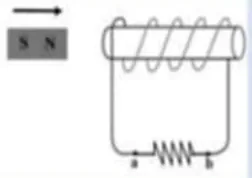
يتكون في طرف الملف المقابل قطب شمالي ليقاوم الاقتراب، ومن قاعدة اليد اليمنى يتحدد اتجاه التيار في المقاومة من $b$ إلى $a$.
212020 د3
يمثل الشكل المجاور حلقة بوجود سلك يسري به تيار كهربائي شدته $(I)$، ماذا يحدث للتدفق المغناطيسي داخل الحلقة عندما تتحرك من النقطة $(A)$ إلى النقطة $(B)$؟
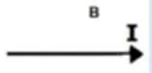
تقترب الحلقة من السلك فيزداد التدفق (خارج الصفحة فوق السلك)، فيتولد تيار حثي مع عقارب الساعة ليولد مجالاً داخل الصفحة يقاوم الزيادة.
222017 د2
وحدة قياس التدفق المغناطيسي هي:
$\Phi=BA$
232017 د2
مصباح مضيء يتصل مع حلقة دائرية مغمورة في مجال مغناطيسي منتظم عمودياً على الحلقة كما في الشكل، ماذا يحدث لإضاءة المصباح عند حركة الحلقة داخل المجال بعيداً عن الناظر:
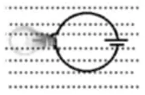
حركة الحلقة موازية للمجال (وداخله المنتظم) لا تغير التدفق خلالها، فلا تتولد قوة دافعة حثية.
242017 د3
ملف حلزوني عدد لفاته $(100$ لفة$)$ وطوله $\mathrm{(20\,cm)}$ ومساحة مقطعه $\mathrm{(5\,cm^2)}$، إذا سرى فيه تيار شدته $\mathrm{(1A)}$، فإن معامل الحث الذاتي للملف يساوي:
في الشكل المجاور، متى يتولد تيار حثي في المقاومة $(R)$ في الدارة $(2)$ بحيث يكون اتجاهه من $(a)$ إلى $(b)$؟
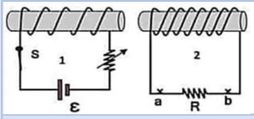
إنقاص المقاومة يزيد تيار الدارة (1) فيزداد التدفق خلال الملف (2)، ويتولد فيه تيار يقاوم الزيادة باتجاه $a\to b$. (الخياران (ب) و(ج) يُنقصان التدفق فيعطيان الاتجاه المعاكس، و(أ) لا يغير التدفق.)
262024 استكمالية
في أي الحالات الآتية يتولد تيار حثي مع عقارب الساعة في الحلقة الفلزية التي ينطبق مستواها على مستوى الصفحة والموضوعة في مجال مغناطيسي منتظم كما في الشكل المجاور؟
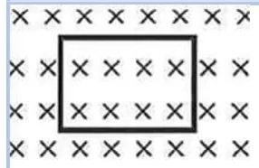
المجال داخل الصفحة، والتيار الحثي مع عقارب الساعة يولد مجالاً داخل الصفحة ليقاوم نقصان التدفق.
272025 د1
بالاعتماد على الشكل المجاور في أي فترة يكون أكبر مقدار للقوة الدافعة الحثية؟
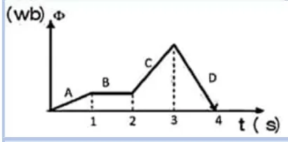
$\lvert\varepsilon\rvert=N\left\lvert\dfrac{\Delta\Phi}{\Delta t}\right\rvert$ = مقدار الميل، وأكبر ميل في الفترة D.
282025 د1
مثلت العلاقة البيانية بين القوة الدافعة الحثية والزمن لمولد كهربائي بالمنحنى الممثل في الشكل (1). ما التعديل الواجب إجراؤه حتى نحصل على المنحنى الممثل في الشكل (2) لنفس المولد؟
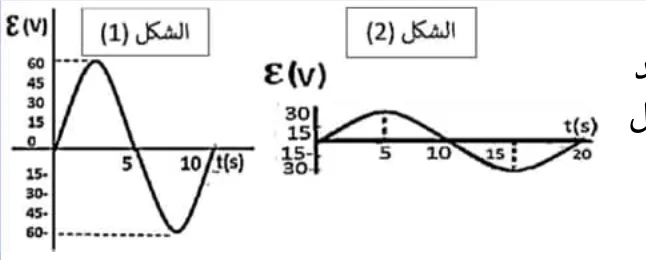
في الشكل (2) قلت القيمة العظمى إلى النصف وتضاعف الزمن الدوري، و $\varepsilon_{max}=NBA\omega$ ⇐ نصف السرعة الزاوية يحقق الأمرين. (تقليل المساحة أو اللفات لا يغير الزمن الدوري.)
292025 د2
في الشكل المجاور، ملف متصل بمصباح كهربائي وبطارية، وبالقرب منه مغناطيس قوي، في أي حالة من الآتية لا تطرأ تغيرات على درجة سطوع المصباح؟
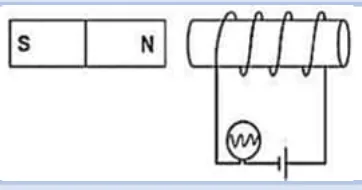
لا توجد حركة نسبية فلا يتغير التدفق ولا تتولد قوة دافعة حثية.
السؤال الثاني (أ): ما المقصود بـ
12021 د1 و2024
الهنري
أظهر الإجابة
معامل الحث الذاتي لملف تتولد فيه قوة دافعة حثية مقدارها $\mathrm{1\,V}$ عندما يتغير التيار المار فيه بمعدل $\mathrm{1\,A/s}$. (الحث الذاتي: النسبة بين القوة الدافعة الحثية المتولدة في المحث والمعدل الزمني لتغير التيار فيه.)
22019 د2
التدفق المغناطيسي
أظهر الإجابة
عدد خطوط المجال المغناطيسي التي تقطع (تخترق) مساحة ما: $\Phi=BA\cos\theta$
32017 د1
الويبر
أظهر الإجابة
التدفق المغناطيسي عندما يخترق مجال مغناطيسي شدته $\mathrm{1\,T}$ عمودياً سطحاً مساحته $\mathrm{1\,m^2}$
42020 د1
قانون فاراداي
أظهر الإجابة
متوسط القوة الدافعة الحثية المتولدة في ملف يساوي عددياً المعدل الزمني للتغير في التدفق المغناطيسي خلاله (مضروباً في عدد اللفات): $\varepsilon=-N\dfrac{\Delta\Phi}{\Delta t}$
السؤال الثاني (ب): أجب، فسّر
12022 د1 صناعي
في الشكل المجاور، حلقة فلزية مستطيلة الشكل وضعت بالقرب من سلك مستقيم طويل يحمل تياراً كهربائياً $(I)$، وبشكل موازٍ له، حدد اتجاه التيار الحثي في الحلقة الفلزية عند تحريك السلك الذي يحمل تياراً كهربائياً بعيداً عنها لأسفل.
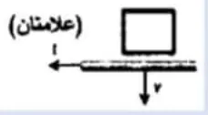
أظهر الإجابة
عند إبعاد السلك يقل التدفق في الحلقة، فيتولد حسب قاعدة لنز تيار حثي يقاوم النقصان، فيكون المجال الحثي بنفس اتجاه المجال المؤثر (داخل الصفحة)، فيكون التيار الحثي مع عقارب الساعة.
22022 د2 علمي وصناعي
في الشكل المجاور، حدد اتجاه التيار الحثي في الحلقة لحظة سحبها لليمين بسرعة ثابتة. موضحاً السبب.
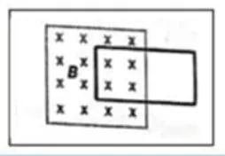
أظهر الإجابة
لحظة سحب الحلقة لليمين يقل التدفق (الخارج من المجال)، فتتولد قوة دافعة حثية تقاوم النقصان، أي مجال حثي بنفس اتجاه المجال الخارجي (نحو الداخل)، فيكون التيار مع عقارب الساعة.
32024 د1
فسر: تضاعف معامل الحث الذاتي لملف حلزوني عند إنقاص طوله إلى النصف مع بقاء عدد لفاته ثابت.
أظهر الإجابة
لأن $L_{in}=\dfrac{\mu_0N^2A}{\ell}$ تتناسب عكسياً مع طول الملف، فعند $\ell'=\dfrac{\ell}{2}$ ⇐ $L'_{in}=2L_{in}$
42024 د2
فسر: المحاثة كمية فيزيائية موجبة دائماً.
أظهر الإجابة
لأنها تعتمد على الأبعاد الهندسية للمحث وعدد لفاته ونفاذية الوسط $\left(L=\dfrac{\mu N^2A}{\ell}\right)$ وكلها موجبة، والإشارة السالبة في $\varepsilon=-L\dfrac{\Delta I}{\Delta t}$ تعبر فقط عن مقاومة التغير.
52024 د2
في الشكل المجاور، بين اتجاه التيار الحثي المار في المقاومة، عند تقريب المغناطيس من الملف، مع التفسير.
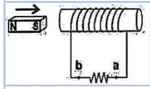
أظهر الإجابة
تقريب المغناطيس يزيد التدفق في الملف، فيتولد تيار حثي ينتج مجالاً يعاكس الزيادة، فيتكون في طرف الملف القريب قطب مماثل لقطب المغناطيس المقابل فيحدث تنافر. وبقاعدة اليد اليمنى يكون اتجاه التيار في المقاومة من $b$ إلى $a$.
62025 د1
فسر: لا يصل التيار قيمته النهائية لحظة إغلاق دارة محث ومقاومة.
أظهر الإجابة
بسبب تولد قوة دافعة حثية عكسية في المحث لحظة الإغلاق تقاوم نمو التيار، فيتحكم المحث في معدل نمو التيار ويمنع نموه المفاجئ، فينمو تدريجياً.
السؤال الثالث: المسائل الحسابية
12022 د1 علمي
ملف حلزوني يتكون من $(N)$ لفة، ومساحة مقطعه $(A)$ وطوله $(L)$، يمر فيه تيار كهربائي شدته $(I)$، أثبت أن الطاقة المختزنة في الملف الحلزوني تعطى بالعلاقة: $E=\dfrac{B^2AL}{2\mu}$
أظهر الإجابة
$E=\frac12L_{in}I^2$ و $L_{in}=\dfrac{\mu N^2A}{L}$ و $B=\dfrac{\mu NI}{L}$ ⇐ $I=\dfrac{BL}{\mu N}$ $E=\dfrac12\cdot\dfrac{\mu N^2A}{L}\cdot\dfrac{B^2L^2}{\mu^2N^2}=\dfrac{B^2AL}{2\mu}$
22022 د1 علمي
في الدارة المجاورة والرسم البياني المجاور لها، أحسب: (1) معدل نمو التيار لحظة إغلاق الدارة (2) القوة الدافعة الحثية عندما يكون التيار $\mathrm{(3A)}$
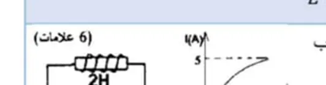
أظهر الإجابة
من الرسم: القيمة النهائية $\mathrm{5\,A}$ ⇐ $\varepsilon=5\times3=15\,\mathrm{V}$ (1) لحظة الإغلاق $I=0$: $\dfrac{\Delta I}{\Delta t}=\dfrac{\varepsilon}{L}=\dfrac{15}{2}=7.5\,\mathrm{A/s}$ (2) $\varepsilon_L=-(\varepsilon-IR)=-(15-9)=-6\,\mathrm{V}$
32022 د1 صناعي
ملف حلزوني مكون من $(300$ لفة$)$ والقوة الدافعة الحثية المتولدة فيه $\mathrm{(0.05V)}$، أحسب: (1) محاثة الملف عندما يتزايد تياره بمعدل $\mathrm{(0.06\,A/s)}$ (2) التدفق المغناطيسي عبر كل لفة عندما تكون شدة التيار $\mathrm{(0.8\,A)}$
أظهر الإجابة
(1) $L=\dfrac{\varepsilon}{\Delta I/\Delta t}=\dfrac{0.05}{0.06}\approx0.83\,\mathrm{H}$ (2) $N\Phi=LI$ ⇐ $\Phi=\dfrac{0.83\times0.8}{300}\approx2.2\times10^{-3}\,\mathrm{Wb}$ (في المفتاح $0.022$ وهو خطأ في المنزلة)
42022 د2 علمي
في الدارة المبينة في الشكل المجاور، إذا كان فرق الجهد بين النقطتين $(a,b)$ عند لحظة معينة يساوي $\mathrm{(6V)}$ والدارة مغلقة، أحسب عند تلك اللحظة كل مما يأتي: (1) معدل نمو التيار في المحث (2) فرق الجهد بين طرفي المحث (3) الطاقة المختزنة في المحث
ملف حلزوني به $(600$ لفة$)$، ومساحة مقطعه $(4\times10^{-4}\,\mathrm{m^2)}$ قلبه من الحديد حيث معامل النفاذية المغناطيسية $(\mu)$ للحديد تساوي $(22\pi\times10^{-4}\,\mathrm{T\cdot} m/A)$، ومعامل حثه الذاتي $\mathrm{(0.5H)}$ ويمر به تيار شدته $\mathrm{(0.5A)}$، أوجد: (1) طول الملف (2) متوسط القوة الدافعة الكهربائية الحثية المتولدة في الملف إذا أنعدم التيار المار فيه خلال $\mathrm{(0.25s)}$
ملف حلزوني طوله $\mathrm{(20\,cm)}$ وعدد لفاته $(200$ لفة$)$ ويمر فيه تيار شدته $\mathrm{(2\,A)}$، وضع بداخله ملف دائري صغير عدد لفاته $(50$ لفة$)$ ومساحة مقطعه $\mathrm{(22\,cm^2)}$ بحيث كان الملفان متحدين المحور، احسب متوسط القوة الدافعة الحثية المتولدة في الملف الدائري: (1) إذا فتح المفتاح وانعدمت شدة التيار في الملف الحلزوني خلال $\mathrm{(0.1\,s)}$ (2) إذا دار الملف الدائري داخل الملف الحلزوني $(0.125$ دورة$)$ خلال $\mathrm{(0.05\,s)}$ (3) في المطلوب السابق، وضح سبب تولد تيار لحظي في الملف الدائري أثناء دورانه.
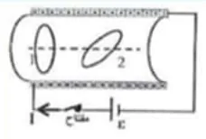
أظهر الإجابة
$B=\dfrac{4\pi\times10^{-7}\times200\times2}{0.2}\approx2.51\times10^{-3}\,\mathrm{T}$، $\Phi=BA\approx5.53\times10^{-6}\,\mathrm{Wb}$ (1) $\varepsilon=50\times\dfrac{5.53\times10^{-6}}{0.1}\approx2.76\,\mathrm{mV}$ (2) $0.125$ دورة $=45^\circ$: $\Delta\Phi=BA(1-\cos45)\approx1.62\times10^{-6}$ ⇐ $\varepsilon=50\times\dfrac{1.62\times10^{-6}}{0.05}\approx1.62\,\mathrm{mV}$ (3) أثناء الدوران يتناقص التدفق الذي يخترق سطح الملف الدائري، فتتولد حسب قانون فاراداي ولنز قوة دافعة حثية تقاوم النقص.
72021 د1 علمي
في الشكل المجاور، أثرت قوة على موصل $(ab)$ طوله $\mathrm{(20\,cm)}$، ينزلق على موصلين متوازيين، فتحرك بسرعة ثابتة $\mathrm{(8\,m/s)}$ باتجاه السينات السالب عمودياً على مجال مغناطيسي منتظم شدته $\mathrm{(2.5\,T)}$، أجب عن الآتية: (1) وضح منشأ القوة الدافعة الحثية في الموصل $(ab)$ (2) ما مقدار واتجاه التيار الحثي المتولد في كل من المقاومتين $(2\Omega,5\Omega)$ (3) ما مقدار القوة المغناطيسية المؤثرة في الموصل $(ab)$ واتجاهها.
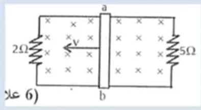
أظهر الإجابة
(1) عند تحريك الموصل تتأثر شحناته الحرة بقوة مغناطيسية $F=qvB$ موازية لطوله، فتتراكم الشحنات السالبة عند طرف والموجبة عند الطرف الآخر، فينشأ فرق جهد بين طرفيه هو القوة الدافعة الحثية. (2) $\varepsilon=BLv=2.5\times0.2\times8=4\,\mathrm{V}$، والمقاومتان على التوازي مع الموصل: $I_2=\dfrac42=2\,\mathrm{A}$، $I_5=\dfrac45=0.8\,\mathrm{A}$ (3) $I=2.8\,\mathrm{A}$ ⇐ $F=ILB=2.8\times0.2\times2.5=1.4\,\mathrm{N}$ شرقاً (تعاكس الحركة)
82021 د1 صناعي
ملف حلزوني طوله $\mathrm{(0.25\,m)}$ مكون من $300$ لفة ومساحة مقطعه $\mathrm{(4\,cm^2)}$ متصل ببطارية وبجانبه ملف حلزوني آخر متصل بمقاومة كما في الشكل المجاور. لوحظ عند غلق المفتاح أن شدة التيار في الملف الأول ازدادت حيث وصل $\mathrm{(2\,A)}$ خلال $\mathrm{(0.4\,s)}$، باعتماد عدد اللفات الواردة في نص السؤال، جد: (1) محاثة الملف الأول (2) متوسط قوة الدافعة الحثية المتولدة في الملف الأول (3) حدد اتجاه التيار الحثي المار في المقاومة $(ab)$ لحظة إغلاق المفتاح مع التفسير.
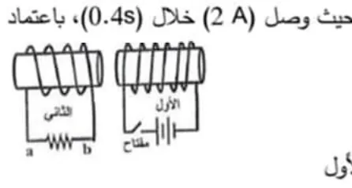
أظهر الإجابة
(1) $L=\dfrac{4\pi\times10^{-7}\times(300)^2\times4\times10^{-4}}{0.25}\approx1.8\times10^{-4}\,\mathrm{H}$ (2) $\varepsilon=-L\dfrac{\Delta I}{\Delta t}=-1.8\times10^{-4}\times\dfrac{2}{0.4}=-9\times10^{-4}\,\mathrm{V}$ (3) عند الغلق ينشأ مجال في الملف الأول فيزداد التدفق عبر الملف الثاني، فيتولد فيه تيار حثي يعاكس الزيادة، وبقاعدة اليد اليمنى يكون التيار في المقاومة من $a$ إلى $b$.
92021 د2 علمي
يبين الشكل المجاور، ملفاً دائرياً قطره $\mathrm{(12\,cm)}$ وعدد لفاته $(200$ لفة$)$، موصول بطرفي مقاومة مقدارها $(33\Omega)$، وموضوع في مستوى عمودي على مجال مغناطيسي منتظم شدته $\mathrm{(0.3T)}$ يتجه نحو الناظر. إذا انعكس اتجاه المجال المغناطيسي، وتغيرت شدته إلى $\mathrm{(0.2T)}$ خلال زمن $\mathrm{(0.2\,s)}$، أجب عما يلي: (1) ما مقدار شدة التيار الحثي المار في المقاومة $R$ (2) حدد اتجاه التيار الحثي في الحلقة، مع التفسير.
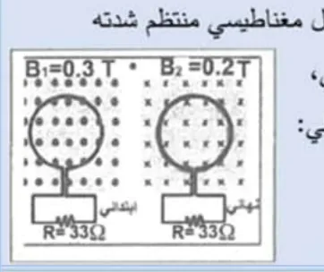
أظهر الإجابة
(1) $\Delta B=0.3-(-0.2)=0.5\,\mathrm{T}$، $A=\pi(0.06)^2\approx1.13\times10^{-2}\,\mathrm{m^2}$ $\varepsilon=200\times\dfrac{0.5\times1.13\times10^{-2}}{0.2}\approx5.65\,\mathrm{V}$ ⇐ $I=\dfrac{5.65}{33}\approx0.17\,\mathrm{A}$ (2) انعكاس المجال (أو نقصانه) يولد تياراً حثياً ينشئ مجالاً بنفس اتجاه المجال الأصلي (نحو الناظر)، فيكون التيار عكس عقارب الساعة.
102021 د2 علمي
الشكل المجاور شريط فلزي موصل كتلته $\mathrm{(0.15\,kg)}$ وطوله $\mathrm{(1m)}$ ينزلق تحت تأثير وزنه للأسفل (في مستوى رأسي) على سكة موصلة. فإذا أغلق المفتاح لحظة دخول الشريط منطقة المجال المغناطيسي المنتظم الذي شدته $\mathrm{(0.75\,T)}$ باتجاه بعيداً عن الناظر احسب: (1) القوة الدافعة الحثية المتولدة في الشريط الفلزي حتى يتحرك بسرعة ثابتة لأسفل (2) سرعة الشريط الفلزي
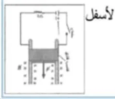
أظهر الإجابة
السرعة ثابتة ⇐ $ILB=mg$ ⇐ $I=\dfrac{1.5}{0.75\times1}=2\,\mathrm{A}$ (1) $\varepsilon=IR=15\,\mathrm{V}$ (مقاومة الدارة $7.5\,\Omega$ حسب الشكل) (2) $v=\dfrac{\varepsilon}{BL}=\dfrac{15}{0.75\times1}=20\,\mathrm{m/s}$
112021 د2 صناعي
موصل $(ab)$ طوله $\mathrm{(20\,cm)}$ متصل على التوالي مع مقاومة $5$ أوم في مجال مغناطيسي شدته $\mathrm{0.3\,T}$ إذا تحرك الموصل لليمين بسرعة $(v)$ كما في الشكل وكان شدة التيار المار في المقاومة $\mathrm{(0.144\,A)}$ أجب عن الآتية: (1) احسب القوة الخارجية اللازمة حتى يتحرك الموصل بسرعة ثابتة؟ (2) احسب القوة الدافعة الحثية المتولدة في الموصل $(AB)$ (3) ما مقدار سرعة الموصل $(AB)$؟ (4) حدد اتجاه التيار الحثي في الحلقة مع التوضيح.
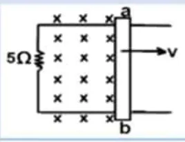
أظهر الإجابة
(1) $F=ILB=0.144\times0.2\times0.3=8.64\times10^{-3}\,\mathrm{N}\ (+X)$ (2) $\varepsilon=IR=0.144\times5=0.72\,\mathrm{V}$ (3) $v=\dfrac{\varepsilon}{BL}=\dfrac{0.72}{0.3\times0.2}=12\,\mathrm{m/s}$ (4) عند حركة الموصل لليمين يزداد التدفق خلال الحلقة، فيتولد تيار يقاوم الزيادة بمجال معاكس للمجال الأصلي، فيكون التيار عكس عقارب الساعة.
122021 د2 صناعي
جسم كتلته $(4\times10^{-28}\,\mathrm{kg)}$ يحمل شحنة مقدارها $(3.2\times10^{-19}\,\mathrm{C)}$، ويدور بسرعة ثابتة مقدارها $\mathrm{(10^7\,m/s)}$ في مسار دائري متعامد مع مجال مغناطيسي منتظم شدته $\mathrm{(0.1T)}$ أجب عن الآتية: (1) احسب القوة المغناطيسية المؤثرة على الجسيم (2) احسب نصف قطر المسار الدائري للجسيم (3) احسب تردد حركة الجسيم
موصل $(x,y)$ طوله $\mathrm{(20\,cm)}$ يتحرك بسرعة ثابتة على موصلين متوازيين ومتصلين بمقاومة مقدارها $(5\,\Omega)$ وبوجود مجال مغناطيسي منتظم مقداره $\mathrm{(4\,T)}$، كما في الرسم المجاور تكون فرق جهد بين طرفي الموصل $\mathrm{(10\,V)}$، احسب ما يلي: (1) مقدار السرعة التي يتحرك بها الموصل (2) مقدار القوة الخارجية المؤثرة على الموصل
موصل معدني طوله $(L)$ وكتلته $(m)$ ينزلق على سكة تحت تأثير وزنه للأسفل بسرعة ثابتة $(v)$ في مستوى رأسي على سكة موصلة موضوعة في مجال مغناطيسي منتظم $(B)$ عمودي على الصفحة للخارج كما في الشكل المجاور، أثبت أن السرعة التي يتحرك بها الموصل تعطى بالعلاقة الآتية: $v=\dfrac{mgR}{L^2B^2}$
موصل $(ab)$ طوله $\mathrm{(40\,cm)}$ متصل على التوالي مع مقاومة $(R)$ في مجال مغناطيسي منتظم شدته $(B)$، إذا تحرك الموصل لليمين بسرعة ثابتة $(v)$ تحت تأثير قوة مقدارها $\mathrm{(0.00864\,N)}$ فتولدت قوة دافعة حثية مقدارها $\mathrm{(0.36\,V)}$ وتياراً حثياً مقداره $\mathrm{(0.072\,A)}$ باتجاه عكس عقارب الساعة كما في الشكل المجاور، احسب: (1) المقاومة المجهولة $(R)$ (2) شدة المجال المغناطيسي المنتظم $(B)$ (3) سرعة الموصل $(v)$ أثناء حركته في المجال المغناطيسي بوحدة $\mathrm{(m/s)}$.
موصل $(ab)$ طوله $\mathrm{(50\,cm)}$ متصل على التوالي مع مقاومة مقدارها $(2\,\Omega)$ في مجال مغناطيسي منتظم شدته $\mathrm{(0.5\,T)}$، إذا تحرك الموصل بسرعة مقدارها $(V)$ حيث تولد فيه تيار حثي شدته $\mathrm{(0.5A)}$ وبعكس عقارب الساعة كما في الشكل المجاور، احسب: (1) القوة الدافعة الكهربائية الحثية المتولدة (2) مقدار السرعة $(V)$ واتجاهها (3) القوة الخارجية اللازمة حتى يتحرك الموصل بهذه السرعة الثابتة.
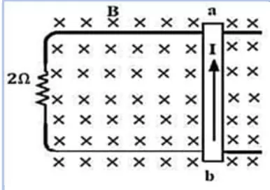
أظهر الإجابة
(1) $\varepsilon=IR=0.5\times2=1\,\mathrm{V}$ (2) $V=\dfrac{\varepsilon}{BL}=\dfrac{1}{0.5\times0.5}=4\,\mathrm{m/s}$ باتجاه $(+X)$ (تيار عكس عقارب الساعة يعني زيادة التدفق الداخل ⇐ يبتعد الموصل عن المقاومة) (3) $F=ILB=0.5\times0.5\times0.5=0.125\,\mathrm{N}$ نحو اليمين
172024 د2
ملف حلزوني طوله $\mathrm{(20\,cm)}$ وعدد لفاته $(200)$ لفة ويمر به تيار شدته $\mathrm{(2\,A)}$ وضع داخله ملف دائري صغير عدد لفاته $(50)$ لفة ومساحة مقطعه $\mathrm{(2\,cm^2)}$ بحيث كان الملفان متحدين في المحور، احسب متوسط القوة الدافعة الحثية المتولدة في الملف الدائري إذا فتحت دارة الملف الحلزوني وانعدمت شدة التيار فيه في زمن مقداره $\mathrm{(0.1\,s)}$.
ملف حلزوني به $(600)$ لفة، ومساحة مقطعه $(4\times10^{-4}\,\mathrm{m^2)}$ قلبه من الحديد، حيث $(\mu)$ للحديد تساوي $(22\pi\times10^{-4}\,\mathrm{T\cdot} m/A)$ ومعامل حثه الذاتي $\mathrm{(0.5\,H)}$ ويمر به تيار كهربائي شدته $\mathrm{(0.5\,A)}$ وجد: (1) طول الملف (2) متوسط القوة الدافعة الكهربائية الحثية المتولدة في الملف الحلزوني إذا انعدم التيار الكهربائي المار فيه خلال $\mathrm{(0.5\,s)}$.
في الشكل المجاور قضيب فلزي موصل للكهرباء كتلته $\mathrm{(0.15\,kg)}$ وطوله $\mathrm{(1\,m)}$ ينزلق على السكة الموصلة الثابتة الطويلة جداً تحت تأثير وزنه للأسفل بحيث يبقى ملامساً للسكة ومن ثم يدخل منطقة مجال مغناطيسي منتظم شدته $\mathrm{(0.75\,T)}$ باتجاه بعيداً عن الناظر احسب: (1) القوة الدافعة الكهربائية الحثية المتولدة في القضيب الفلزي حتى يتحرك بسرعة ثابتة للأسفل (2) مقدار السرعة الثابتة التي يصل إليها القضيب الفلزي في منطقة المجال المغناطيسي.
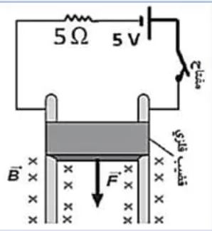
أظهر الإجابة
السرعة ثابتة ⇐ $ILB=mg$ ⇐ $I=\dfrac{1.5}{0.75}=2\,\mathrm{A}$ الدارة: مقاومة $5\Omega$ وبطارية $\mathrm{5\,V}$؛ القوة الدافعة الحثية تعاكس البطارية: $\varepsilon'-5=2\times5$ ⇐ (1) $\varepsilon'=15\,\mathrm{V}$ (2) $v=\dfrac{\varepsilon'}{BL}=\dfrac{15}{0.75}=20\,\mathrm{m/s}$
202025 د1
بالاعتماد على البيانات على الشكل احسب: (1) فرق الجهد بين طرفي المحث عندما يمر تيار مقداره يساوي نصف مقدار التيار النهائي (2) القدرة المختزنة في المحث عندما يمر تيار مقداره يساوي نصف مقدار التيار النهائي.
أظهر الإجابة
عند $I=\frac12I_{max}$: جهد المقاومة $=\frac{\varepsilon}{2}$ فجهد المحث $=\frac{\varepsilon}{2}$ الإجابة النهائية: (1) $V_{محث}=10\,\mathrm{V}$ (2) معدل اختزان الطاقة $\dfrac{\Delta E}{\Delta t}=V_LI=8\,\mathrm{W}$ (شكل هذا السؤال غير موجود في الملف المصدر.)
212025 د2
في الدارة الكهربائية في الشكل المجاور، إذا كانت قراءة الفولتميتر لحظة إغلاق الدارة $(24$ فولت$)$، وإذا كانت أكبر قراءة للأميتر $(6$ أمبير$)$، بإهمال المقاومات الداخلية، احسب ما يأتي: (1) المعدل الزمني لنمو التيار لحظة إغلاق الدارة (2) المقاومة الكهربائية $(R)$ (3) الطاقة الكهربائية المختزنة في المحث عندما تكون قراءة الأميتر $(2$ أمبير$)$
مولد كهربائي ملفه على شكل مربع، طول ضلعه $\mathrm{(20\,cm)}$، وعدد لفاته $(100)$ لفة، يدور حول محور متعامد مع مجال مغناطيسي شدته $(B)$ مستعيناً بالشكل المجاور، احسب: (1) السرعة الزاوية للملف (2) القوة الدافعة الكهربائية العظمى المتولدة (3) شدة المجال المغناطيسي $(B)$ (4) القوة الدافعة الكهربائية الحثية عندما تكون الزاوية المحصورة بين مستوى الملف والمجال المغناطيسي $30$ درجة.
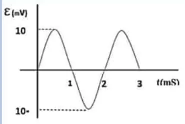
أظهر الإجابة
(1) من الشكل $T=2\,ms$ ⇐ $\omega=\dfrac{2\pi}{T}=\pi\times10^3\,\mathrm{rad/s}$ (2) $\varepsilon_{max}=10\,\mathrm{mV}$ (3) $B=\dfrac{\varepsilon_{max}}{NA\omega}=\dfrac{0.01}{100\times0.04\times\pi\times10^3}=\dfrac{1}{4\pi}\times10^{-5}\,\mathrm{T}$ (4) الزاوية بين العمود على الملف والمجال $60^\circ$ ⇐ $\varepsilon=\varepsilon_{max}\sin60^\circ\approx8.7\,\mathrm{mV}$